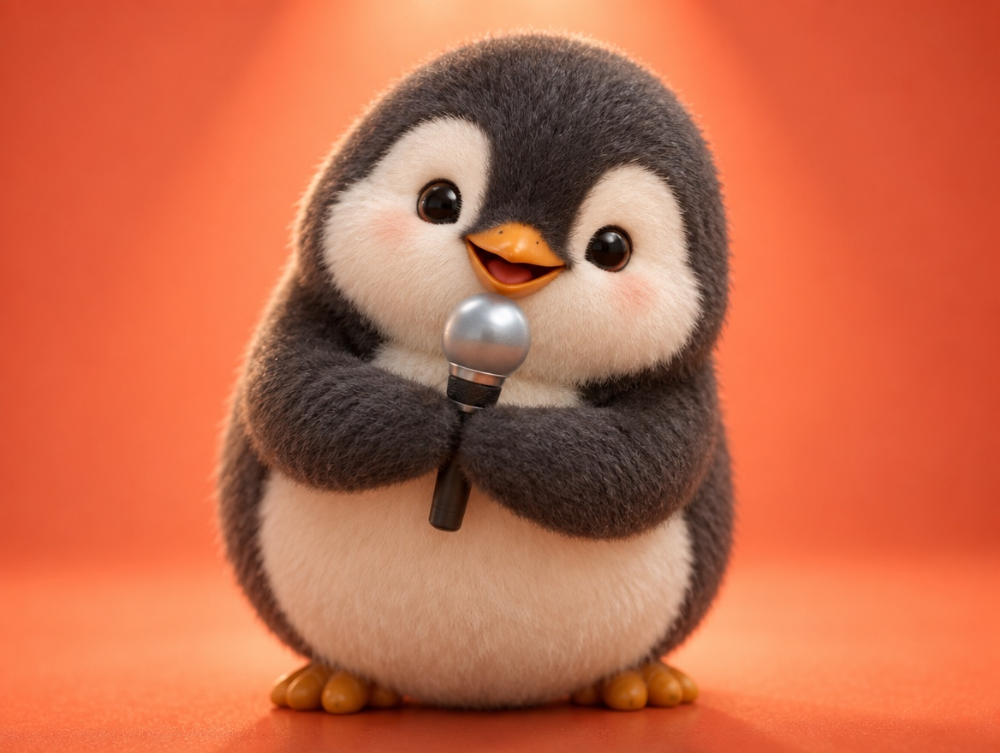

📝 DRAFT · 下書き — まだ本番に出していません · 下書き一覧
🐧 EVERYDAY LIFE⚡ 21 SEC
Commentate in your head, and words come out easily 🎙️

Small Talk Practice
There is good practice for people who are bad at small talk.
Like Announcers
You just commentate in your head like an announcer.
"It is a clear autumn day today!" "A high school student is running. Is he late?"
⚡ TRY IT
🎙️ Live commentary practice
● ON AIR0
📺Say what you see, like a TV announcer.
The sky this morning
"A clear autumn sky! A perfect day for laundry!"
A cat on a wall
"The cat is not moving at all. Is it the boss of this town?"
A bicycle on the street
"Someone is pedaling very fast! Late for school?"
The cafe menu
"A new drink: sweet potato latte! Autumn is here!"
A quiet train
"Everyone is looking at their phone. So quiet today!"
Your lunch
"Today's rice ball is salmon. A safe and strong choice!"
A dentist's sign
"Why is the doctor on the sign always smiling?"
Practice meter
5 scenes in a row, and you are an announcer!
Say it in your head first. Then tap the mic!
0 / 5
Nice! Keep going.
🏆 5 in a row! Words are coming out smoothly.
Two Weeks
If you do it for about 2 weeks, it is said that words come out easily.
Anywhere Works
You can do it on the train or at a cafe.
📚 I learned this from the Japanese blog "Panda no Ondo".